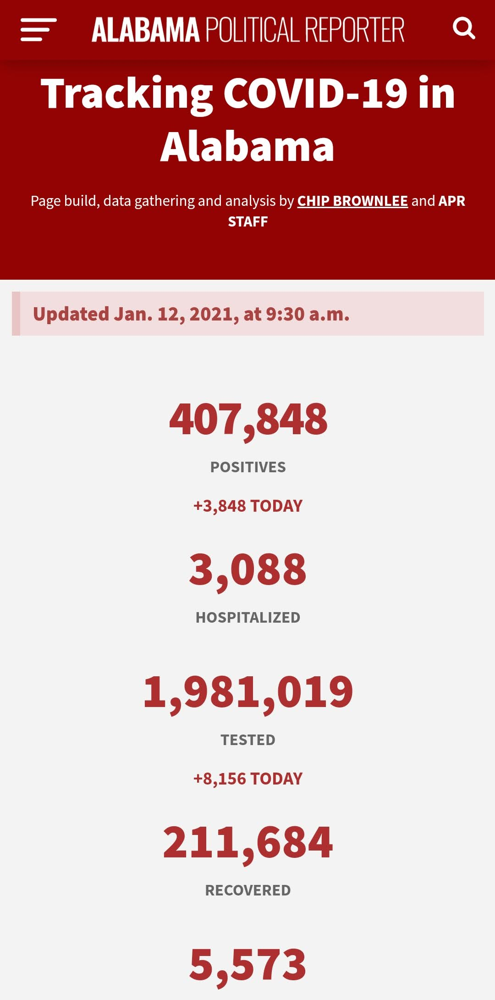
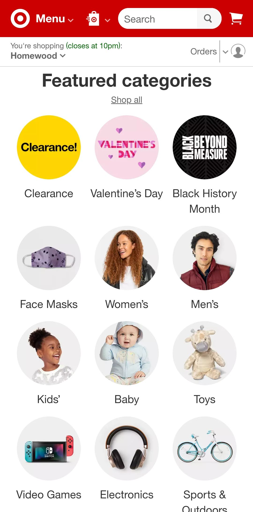
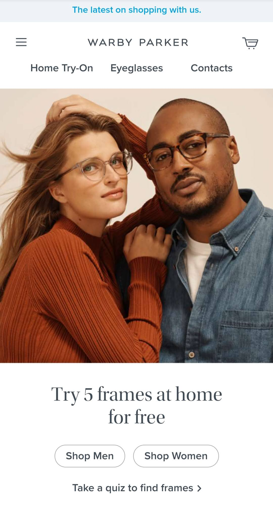

White Space
Alabama Political Reporter
alreporter.com
The Alabama Political Reporter Site demonstrates a clean layout supported by plenty of white space in the design. By keeping this white space around the information on the page it allows the numbers to speak for themselves. In a landscape where COVID data is often mired in cluttered dashboards with lots of difficult to parse information this site is a breath of fresh air.
Alignment
Target
target.com
Throughout Target's website they make great use of alignment. Choosing to have these items grouped together with such clear order amongst them allows our brains to categorize these items and more easily parse that they have a similar meaning on the website. In the case of this particular screenshot, we can see that these repeated and aligned elements are all categories at a similar level of hierarchy in the site navigation.
Proximity
Warby Parker
warbyparker.com
Through use of proximity, Warby Parker communicates that various elements on their site are related to each other. At the top of the site we see three words spaced near each other on one line. These three words clearly reperesent three categories we can choose from to further navigate the site. In the same manner, we have two filters presented below the image. These two words are placed right near each other as well, also showing a close relationship. By presenting the information neatly grouped into proximal locations, it makes it easier for us to navigate the site and understand the information is related to each other.